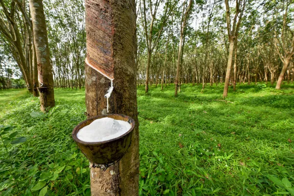

História do Acre

O Acre, localizado na região Norte do Brasil, possui uma história rica e complexa que remonta ao final do século XIX. Originalmente habitado por povos indígenas, a área começou a ser colonizada por imigrantes em busca de oportunidades econômicas, especialmente durante o "Ciclo da Borracha".
Ciclo da Borracha
A partir da década de 1880, a demanda por borracha, utilizada na indústria automobilística e na fabricação de pneus, levou a um intenso fluxo migratório para a região. Os seringueiros, trabalhadores que extraíam a borracha das seringueiras, foram fundamentais para a economia local. O auge deste ciclo ocorreu até a década de 1910, quando a borracha do Brasil começou a perder espaço para a produção na Malásia, que possuía plantações mais produtivas.
Emancipação
O Acre foi inicialmente parte do território do estado do Amazonas e, em 1903, foi adquirido pelo Brasil através do Tratado de Petrópolis, em um acordo com a Bolívia. A luta pela autonomia e pelos direitos dos habitantes do Acre resultou na Revolução Acreana, que culminou na criação do Estado do Acre em 1962. A capital, Rio Branco, foi desenvolvida durante este período.
População
Atualmente, o Acre tem uma população estimada em cerca de 900 mil habitantes, composta por uma mistura de descendentes de imigrantes, indígenas e nordestinos que se mudaram para a região em busca de melhores condições de vida.